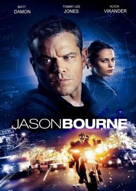
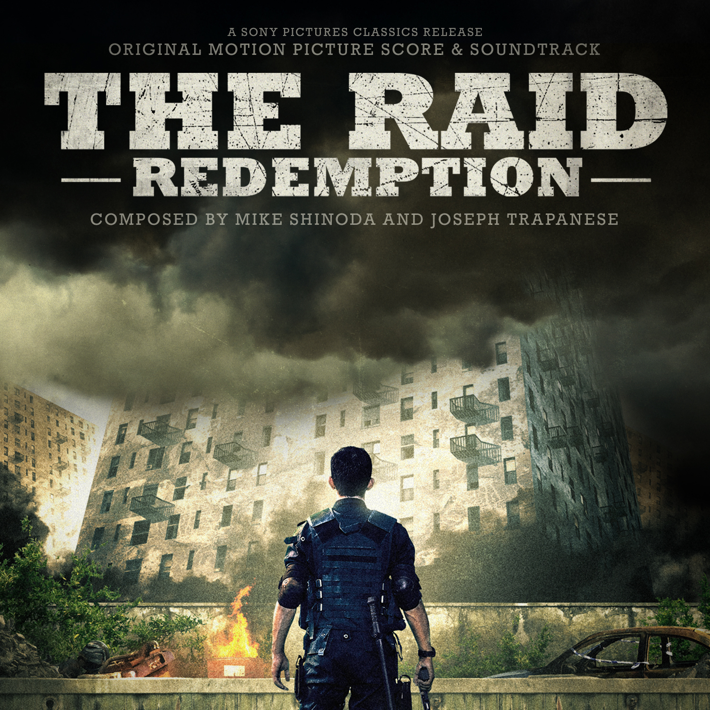

"Jason Bourne"
Film genre: Triller,Drama,mellodrama
Realese date : 27 July 2016
Description :Stars:Matt Damon, Tommy Lee Jones, Alicia Vikander:: Jason Bourne is again being hunted by the CIA. It begins when Nicky Parsons a former CIA operative who helped Bourne, who went under and now works with a man who's a whistle blower and is out to expose the CIA's black ops. Nicky hacks into the CIA and downloads everything on all their Black Ops, including Treadstone which Bourne was a part of. And Heather Lee, a CIA agent, discovers the hack and brings it to the attention of CIA Director Dewey, the man behind the Black Ops. He orders Parsons be found and, hopefully, Bourne, too.

"Winter sanata"
Film genre :Romance
Realese date:2002 year , March 19
Description:Cast: Bae Yong-Jun, Choi Ji-Woo, Park Yong-Ha.Jun-Sang moves to a small town in the country and meets Yoo-Jin in the local high school. They fall in love, but Jun-Sang faces a terrible tragedy and gets killed in a car accident. Ten years later, Yoo-Jin meets a guy who looks just like her Jun-Sang. Yoo-Jin has to choose between her current boyfriend and a person who reminds her of her dead sweetheart.
"Vir and Zara"
Film genre: Drama | Family | Musical | Romance
Release date:2004 year , 12 November
Description: cast:Shahrukh Khan,Priti Zinta,Rani Mukherjee.Squadron Leader Veer Pratap Singh (Shah Rukh Khan) is a rescue pilot with the Indian Air Force. In the line of duty he comes across a stranded Zaara (Preity Zinta) - a girl from Pakistan who has come to India to fulfill her surrogate mothers dying wish. Veer saves her life and his life is never the same again. Twenty two years later Saamia Siddiqui (Rani Mukerji), a Pakistani human rights lawyer on her first case, finds herself face to face with an ageing Veer Pratap Singh. He has languished in a Pakistan jail cell for 22 years and has not spoken to anyone all these years. And no one knows why. Her mission is to discover the truth about Veer and see to it that justice is served. VEER-ZAARA is a saga of love, separation, courage and sacrifice. A love that is divine, a love that is whole-hearted, a love that is completely consuming, a love that grows with separation and deepens with sacrifice. A love that is an inspiration - and will remain a legend forever.
"The Raid"
Film genre:Action | Thriller
Release date:18 May 2012
Description:Stars:Iko Uwais, Ananda George, Ray Sahetapy.In Jakarta, Indonesia, Lieutenant Wahyu organizes the invasion of an apartment building that is the safe house of the powerful and cruel drug lord Tama and his gang. The SWAT team breaks in the building but one lookout sees and warns the gangsters and the police force is trapped on the seventh floor. They learn that Lt. Wahyu has not informed his superiors about the operation. Now the police officers have to fight with limited ammunition against the armed and dangerous gangsters.

Home